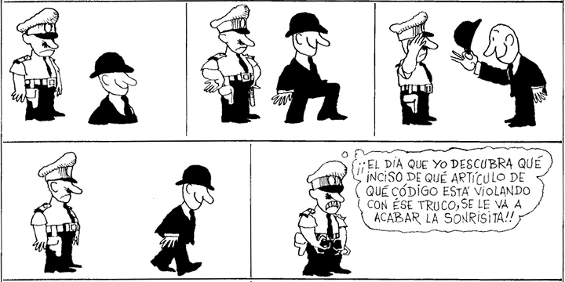

Extraction from ellipsis sites
The topic of this course will be extraction and movement out of ellipsis sites. It will be run as a seminar, with students presenting papers on the topic.
- Time: Monday 13:00 – 15:00
- Location: SS 2116

Readings
Course readings are listed below. Links to articles will go through the U of T library or the U of T Portal (which will require a UTORid), or to
LingBuzz or some other repository. Course handouts are freely available.
Schedule
11 September: Introduction
During our first meeting, I'll lay out a survey of the sort of phenomena that we'll be looking at during the course as well as a number of recurring themes and theoretical issues we'll come across. A general assumption in this course will be that ellipsis is a PF phenomenon resulting in syntactic structure being unpronounced. This is not the only idea in the literature, but it provides the most straightforward account for why it looks like material can move out of ellipsis sites. We'll spend some time discussing the evidence, most notably the evidence from Merchant 2001. We'll use this as a jumping off point for discussing other phenomena.
(I will not assume that you have read any of the readings, but if you are familiar with them already it may help.)
18 September: Fragments
Merchant (2004) argues for a sluicing-like analysis of fragments, proposing that these elements undergo movement out of a clause that is subsequently deleted. Weir (2014) is, in many way, a response to Merchant's paper. Weir identifies several potential issues for Merchant's analysis and reapproaches the issue of island violations, arguing that fragments do not appear to be island sensitive.
Weir's chapter is important to us because it's the first place we will see the idea that focused material must move to avoid deletion. Weir's particular implementation involves PF movement. He argues that certain fragments cannot have moved in the narrow syntax. Ellipsis, however, would delete these elements. Since they must receive focus – a PF requirement – focused elements may move on the PF branch as a last resort to satisfy this requirement. This has the nice result that otherwise unmotivated movement now has an explanation.
25 September: Gapping and pseudogapping
Gapping and pseudogapping look remarkably similar, but they are remarkably different. Since at least
Jayaseelan 1990, it has been assumed that pseudogapping is a form of verb phrase ellipsis with movement of some phase out of the ellipsis site. The nature of that movement, though, has been the subject of debate: Jayaseelan proposes that it is heavy NP shift due to the apparent requirement that the remnants receive focus, but Lasnik argues that it is overt movement to SpecAgrOP. Gapping is even more troublesome. Johnson argues that while pseudogapping is elliptical, gapping is pure movement.
02 October: Multiple sluicing
Multiple sluicing is the name given to a phenomenon where sluicing leaves behind two
wh-remnants. The strange thing is that this occurs in languages where multiple
wh-movement is not possible. How, then, does this happen? One idea is that the
wh-elements must escape deletion at PF, requiring them to move out of ellipsis sites. Lasnik proposes an alternative view: The second
wh-remnant is a pseudogapping remnant.
Abels & Dayal focus on a somewhat unexpected property of multiple sluicing: Both remanants must originate inside the same clause (but this clause can be in an island). Their analysis carries supports the view that ellipsis cannot ameliorate islands.
16 October: Verb-stranding verb phrase ellipsis
We have focused on phrasal movement so far, but if the hypothesis that ellipsis contain internal syntactic structure is right, head movement out of ellipsis sites should also be possible. The result is verb-stranding verb phrase ellipsis, where VPE appears to delete all verb-phrase-internal material except the verb. There are two problems here. First, it is not always easy to tell verb-stranding VPE apart from object drop. One of the ways we can is the verbal identity requirement, which requires the the verb (root) extracted from an ellipsis site match the verb in the antecedent. The second question is understanding why (and even whether) that should be true, since phrasal material extracted from ellipsis sites is not subject to the same requirement.
23 October: MaxElide
MaxElide is a term coined by
Merchant (2008) as an explanation for an apparent preference for sluicing when both sluicing and VPE appear to be available, in principle:
- They studied a Balkan language, but I don't know which (*they did).
An explanation, pursued by
Takahashi & Fox (2005) is based in how traces are bound in ellipsis sites.
30 October: Limited extraction
There are two pain approaches to this phenomenon. One that has received a great deal of attention is the idea that ellipsis is tied to cyclic spell-out or phases. There are various forms of this in the literature. We will read
Bošković 2014.
A separate approach proposes that even though ellipsis behaves in many ways similar to phases, ellipsis is triggered by special ellipsis-licensing heads (rather than phase heads) that send the ellipsis sites to the interfaces. This idea has most thoroughly been explored by Lobke Aelbrecht in
her 2010 book (see also
Baltin 2012). We will look at her more recent paper, which attempts to join aspects of the phase-based analysis with ellipsis-licensing heads.
13 November: Noun stranding?
20 November: TPE – Applications
27 November: VPE – Applications
04 December: Wrap-up